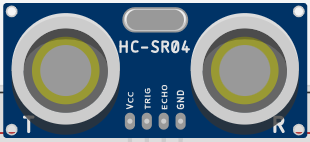

Am Ultraschallsensor fallen die beiden Aluminiumzylinder mit Gitternetzen auf:

Zur Entfernungsmessung wird zunächst vom linken Zylinder, der einen Lautsprecher enthält, ein kurzes Ultraschall-Signal ausgesendet. Ultraschalltöne sind so hoch, dass sie vom Menschen nicht wahrgenommen werden können.
Der Schall prallt auf ein Objekt und wird von diesem zurückgeworfen. Sobald das reflektierte Signal am Sensor ankommt, wird es vom rechten Zylinder, der ein Mikrofon enthält, wahrgenommen.
Aus der Zeit, die zwischen den Aussenden des Signals und dem Empfangen des reflektierten Signals vergeht, kann die Entfernung zum Objekt berechnet werden.
Schließe den Sensor nach folgendem Schema an:
Erstelle einen neuen Sketch und speichere ihn unter dem Namen Ultraschall.
int trigger=6; // Trigger zum Senden des Signals
int echo=5; // Echo zum Empfangen des relektierten Signals
In der setup()-Methode startest du die serielle Datenübertragung und legst die beiden Pins als Ausgang und Eingang fest.
void setup()
{
Serial.begin (9600);
pinMode(trigger, OUTPUT); // Trigger-Pin ist ein Ausgang
pinMode(echo, INPUT); // Echo-Pin ist ein Eingang
}
void loop()
{
digitalWrite(trigger, LOW);
delay(5);
digitalWrite(trigger, HIGH);
delay(10);
digitalWrite(trigger, LOW);
int dauer = pulseIn(echo, HIGH);
int entfernung = (dauer/2) * 0.03432;
Serial.print(entfernung);
Serial.println(" cm");
delay(1000);
}
digitalWrite(trigger, LOW);
delay(5);
Zunächst wird der Trigger 5 ms ausgeschaltet, damit er sicher ein sauberes Signal liefert.
digitalWrite(trigger, HIGH);
delay(10);
digitalWrite(trigger, LOW);
Anschließend wird für 10 ms ein Ultraschallsignal ausgegeben
int dauer = pulseIn(echo, HIGH);
Über die pulseIn()-Funktion wird die Zeit gemessen, bis der echo-Pin das reflektierte Signal empfängt und HIGH geschaltet wird.
Der Wert wird in Mikrosekunden, also in Millionstel Sekunden ausgegeben.
int entfernung = (dauer/2) * 0.03432;
Zur Berechnung der Entfernung in cm wird die Zeit zunächst durch 2 geteilt, da nicht der Hin- und Rückweg des Signals, sondern nur der einfache Weg gemessen werden soll.
Anschließend wird diese Zeit mit dem Weg mulitipliziert, den der Schall in einer Mikrosekunde zurücklegt:
Schallgeschwindigkeit = 1235,5 km/h = 343,2 m/s = 0,0003432 m/µs = 0,0343 cm/µs